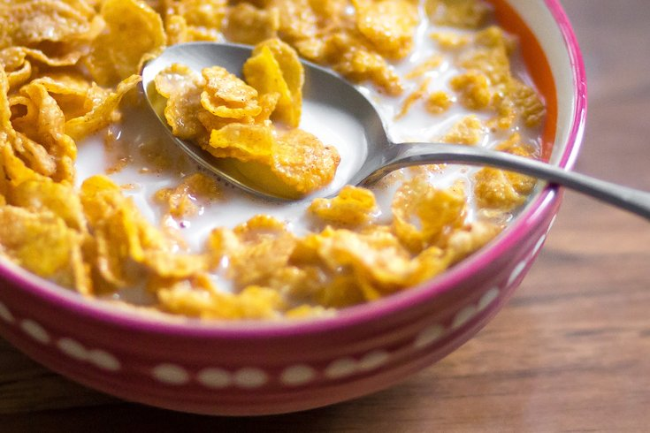

<h1>Making Cereal</h1>


<body>
<h2> Description </h2>
<p>
Quick meal that I believe everyone if not most, has eaten in their lives.
</p>

<p>
<h3>Ingredients </h3>
<ul>
<li>Bowl </li>
<li> Box of Cereal</li>
<li> Spoon</li>
</ul>
</p>

<p>
<h4> Steps</h4>
<ol>
<li> Pour Cereal into bowl with amount you need</li>
<li> Pour milk</li>
<li> Warm it up in the microwave if you are like me</li>
<li> Thats it, Enjoy</li>
</ol>
</p>

<a href="../index.html" >Home Page </a>
</body>
